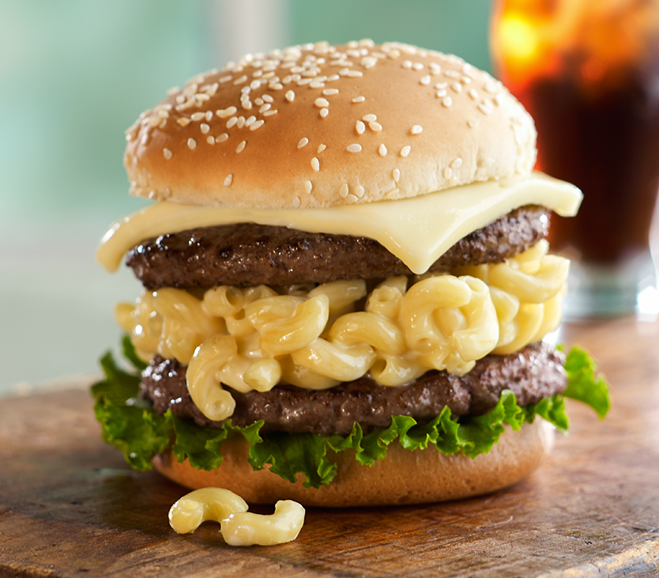

Cheeseburger Recipe

The Mac n Cheese Burger You'll [Forever] Be Addicted to
Ingredients
- 8 ounces elbow macaroni
- 2 1/4 tablespoons butter
- 1 1/2 tablespoons all-purpose flour
- 1/2 teaspoon salt
- 1/8 teaspoon black pepper
- 1 cup whole milk
- 1 pound Cooper® Sharp White or Yellow cheese, sliced
- pound lean ground beef*
1
- 1 teaspoon salt
- 1/2 teaspoon black pepper
- 2 leafy green lettuce leaves
- 2 hamburger buns with seeds
Directions
-
Set aside 4 slices of the Cooper® Sharp cheese.
You’ll use these on the burgers,
so keep them in the fridge until you’re ready for them.
-
Cook macaroni according to package directions.
-
Melt butter in a 3-quart saucepan until sizzling.
Stir in flour, 1/2 teaspoon salt, and 1/8 teaspoon black pepper.
Add milk and cook over medium heat,
stirring constantly until mixture thickens (about 5-7 minutes).
-
Reduce heat to low. Stir in remaining Cooper® Sharp cheese slices
(not the 4 slices in your fridge), stirring constantly until cheese
is melted. Add cooked macaroni and stir well.
-
In a medium bowl, mix ground beef, 1 teaspoon salt, and 1/2 teaspoon black pepper.
Form into 4 patties.
-
Cook the burgers in a medium skillet for 6-8 minutes per side, or until the internal temperature reaches 165°F,
and burgers are browned all the way through. On two of the burgers, during the last minute or so of cooking,
layer 2 slices of Cooper® Sharp each.
Continue heating until the cheese is as melty as you like it.